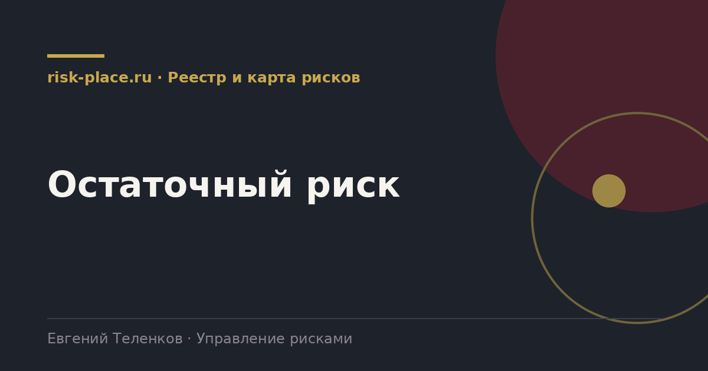

Главная · Библиотека · Реестр и карта рисков · Остаточный риск
Библиотека · Реестр и карта рисков
Остаточный риск это уровень риска, который остается после того, как сработали все принятые меры. Считается просто, а спорят о нем чаще всего.

Присущий риск, он же риск до мер, это уровень при полном отсутствии управления. Оценивать его честно тяжело, потому что какие-то меры в компании работают всегда, часто неформально.
Текущий остаточный риск это уровень с учетом мер, которые уже действуют сегодня. Это главная цифра, именно ее сравнивают с аппетитом.
Целевой остаточный риск это уровень, которого компания намерена достичь после выполнения запланированных мероприятий. Разница между текущим и целевым это и есть содержание плана работы на год.
Пример по риску остановки производства из-за отказа единственного поставщика упаковки.
| Уровень | Вероятность | Влияние | Комментарий |
|---|---|---|---|
| Присущий | Высокая | Критическое | Один поставщик, склад на трое суток, договор без штрафов за срыв |
| Текущий остаточный | Средняя | Существенное | Склад увеличен до 14 суток, в договоре появилась ответственность |
| Целевой остаточный | Низкая | Существенное | После квалификации второго поставщика к концу года |
Влияние часто не меняется мерами вообще. Меняется вероятность и скорость восстановления. Это нормально и это надо честно показывать.
Остаточный риск обретает смысл только рядом с границей. Если компания заявила аппетит, значит для каждого существенного риска есть ответ на вопрос, укладываемся мы или нет.
Три возможных решения по риску выше аппетита. Добавить меры и потратить деньги. Пересмотреть аппетит, если он был задан нереалистично. Или сознательно принять превышение решением уполномоченного органа, с записью в протоколе. Четвертого варианта, промолчать, в работающей системе не существует.
Частые вопросы
Одна форма для любого вопроса
Расскажем о ближайших датах, предложим формат под ваш состав участников и назовем порядок бюджета.
Предпочитаете почту — напишите на info@risk-place.ru. Адрес: Москва, улица Скаковая, 32с2.
 risk-
risk-